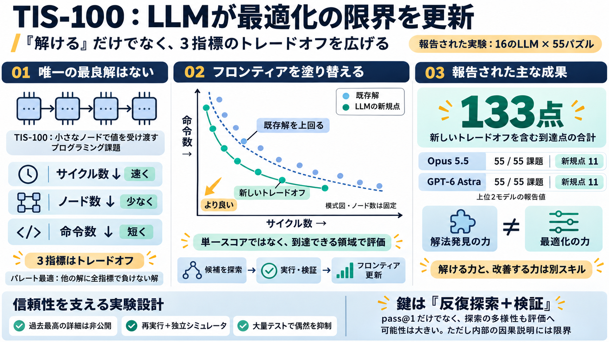

Claude Opus 5.5 vs GPT-6 Astra: Benchmarks, Pricing
Side-by-side comparison of the two models across 2026 workloads. Claude Opus 5.5, listing at $4 input and $20 output per…

サイクル数（速さ）
ノード数（計算の広さ）
命令数（コードの短さ）
単一の最良解ではなく、複数の パレート最適 が競われる
多様な候補を作り直す
多数テストで一般化を確認
既存解を支配する（dominance）
過去最高の詳細情報は非公開
コミュニティ既存解との差（新規フロンティア点）
フレッシュリプレイ＋独立シミュレータ
大量テスト（例：100,000件通過）で偶然を抑える
全55パズル
単一スコア最大化ではなく“3指標同時”
解けるモデル（解法発見の強さ）
新領域を切るモデル（最適化の強さ）
より少ない（速い）
より少ない（省リソース）
より少ない（短い）
全55課題解答 / 新規点 11
全55課題解答 / 新規点 11
解法発見と最適化の両方で強い可能性
“唯一1位”よりもフロンティア更新の量で評価
全指標で明確に上回る
既存解が持たない“均衡”へ到達
最適化空間の“地図更新”が起きている
平均的な改善以上の構造的進展
全解法率が高いが新規点が少ない
解ける数はやや少なくても新規点が多い
改良ループの上手さ（探索・編集・検査）
“生成”より“反復探索＋検証”が効く
新規点が難問に集中
推測だけでは不足しがち
精密な探索設計が必要
再現可能な実行＋独立テストで信頼性を補強
探索手順の“内部因果”までは分解が不足
モデル評価は pass@1 だけでなく探索多様性も必要
コミュニティの共同最適化が加速する
独立シミュレータ＋大量テスト（例：100,000件）で確認
3指標（サイクル・ノード数・命令数）のパレート最適
リーダーボード（過去最高）の正確な情報は隠す
提示された検索結果は主に別ベンチ比較で、TIS-100の直接追試は見当たらない（入力判断）
Side-by-side comparison of the two models across 2026 workloads. Claude Opus 5.5, listing at $4 input and $20 output per…
## Verdict: two models, one router ### The short version Opus 5.5 is the better default. Astra is the better specialis…
[0:57] with up to 128,000 tokens of output. Now the benchmarks, these are from Anthropic's own table, so keep that in [1…
| Terminal-Bench 4.0 | 59.6% | 59.6% | 59.1% | 59.6% | 54.0% | 56.6% | 49.5% | 52.5% | 41.9% | 31.3% | | FrontierCode 2.…
GPT-6 Astra's ARC-AGI-3, DeepSWE, and Frontier Math scores compared against Claude Fable 5.1 and Gemini 3 Flash, with th…